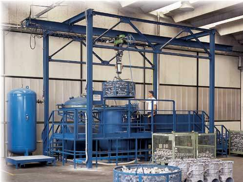
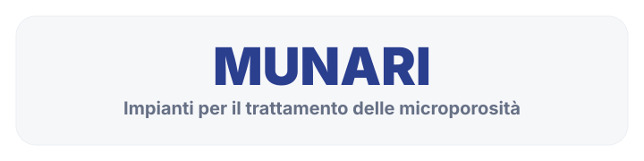

Lavorazioni
Impregnazione
Trattamento dedicato alla chiusura delle microporosità e al miglioramento della tenuta dei componenti.
Processo specializzato
Riparazione delle microporosità nei pezzi pressofusi
La fase di impregnazione viene eseguita esternamente con macchina acquistata da Munari.
Il trattamento permette di riparare le microporosità che producono fughe, tramite prodotto formulato a base di polisilossani e sali sodici di acido polisilicico.


Una lavorazione per migliorare tenuta e affidabilità
Il prodotto penetra nelle porosità e, in seguito a reazione chimica, si converte in un materiale elastico insolubile in acqua e in altri solventi, ancorandosi alle pareti delle porosità del materiale impregnato.
- Riduzione delle fughe dovute a microporosità
- Applicazione su componenti in leghe leggere
- Processo mirato alla continuità funzionale del pezzo
Hai un componente da valutare?
Verifichiamo la lavorazione più adatta
Contattaci per valutare materiale, criticità e requisiti richiesti dal componente.